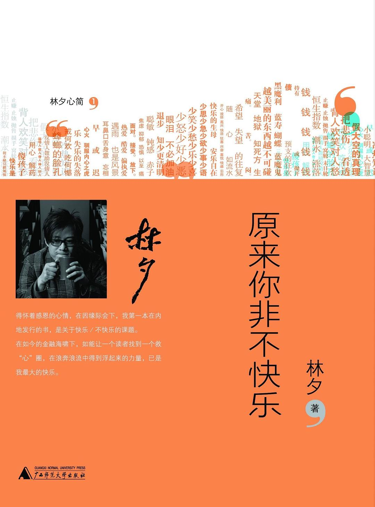

《原来你非不快乐》

5
★★★☆☆
豆瓣评分 · 26,880 人评价
华语词坛传奇填词人林夕的心灵随笔代表作。将与抑郁症长期搏斗的切身体会与佛学禅宗智慧相融，层层剖析现代人焦虑、内耗与执念的根源，点破‘放下手中的玩具，方能真正安睡’的人生真谛。
总体观点
现代人最大的痛苦往往来自于‘强求快乐’和‘对负面情绪的病态排斥’。我们把快乐设定为一种不断升级的外在指标，一旦达不到就陷入抑郁，一旦得到又立即厌倦。
林夕以禅门‘破执’破译快乐密码：快乐不是一种永久持续的亢奋状态，而是一种能够平静接纳无常、放下手中玩具、安享当下的心境。
脸色放在一旁，承认自己的不完美与局限，看破名利的虚妄，向死而生，方能拥有真正的安详与坦然。
核心观点
-
1. 未知苦焉知乐：接纳情绪的自然起伏
痛苦与快乐是一体两面，拒绝承认痛苦的存在反会加剧焦虑，敢于凝视悲伤才是治愈的起点。
失恋时不强装无所谓，允许自己悲伤痛哭，顺应情感宣泄才能自然释怀。 -
2. 抛开手里的玩具：警惕消费欲望绑架
成人如执迷玩具的孩童，背负过多物品与社会标签反而剥夺了最基础的安宁与睡眠。
为了虚荣贷款购买过剩奢侈品，徒增债务压力与焦虑。 -
3. 仰望过高贬低自己：打破攀比牢笼
人的自卑多来自于将自己日常琐碎与他人橱窗式的光鲜对照，破除盲目偶像崇拜才能找回自足。
社交媒体上精修的生活照并非他人全貌，执迷比较只会让自己深陷失落。 -
4. 脸色放在一旁：脱敏于他人的评价
过多在乎他人的眼光与脸色是对心力的极大耗损，建立内在稳定的评价坐标内心才宽广。
职场中不必因上司的一句冷眼而整夜反刍，专注于事情本身而非人际揣摩。 -
5. 未知死焉知生：向死而生的豁达
正视生命的有限与死亡的确定性，很多日常争执与名利得失便会在苍穹宇宙间显得微不足道。
经历至亲离世后，常能瞬间看开以往纠结的人情恩怨，重获新生般的自在。
全书结构
-
第一章 听心跳放下静如禅
在浮躁喧嚣中回归呼吸与心跳，学会断舍离浮华的执念。
借佛学观照呼吸法化解深夜工作焦虑的自我修行。 -
第二章 抛得开手里的玩具先懂得好好进睡
揭露消费主义制造的虚妄欲望，呼吁卸下身外之物换取踏实睡眠。
孩童舍不得放下玩具终至哭闹，映射成人深陷消费债务的疲惫。 -
第三章 仰望到太高贬低的只有自己
解构攀比心理的荒谬，阐释自足与接纳真实自我的重要性。
不再把名人榜样作为标尺，珍视属于自己的平凡幸福。 -
第四章 王子挑选宠儿外套寻找它的模特儿
探讨爱情与人际关系中的理想化投射，放下改造对方的执念。
把对方当作独立的生命去爱，而不是要求对方穿上自己定制的情感外衣。 -
第五章 脸色放在一旁内心反而宽广
分析职场与家庭人情世故中的内耗，倡导脱敏于他人的脸色与评判。
坦然面对社交中的冷场与不认可，专注于自我内心的充实与坦荡。 -
第六章 涌涌声浪撞睡莲拈花带笑静默无言
从禅宗公案中汲取生活智慧，在人声鼎沸的纷扰中保有幽微定力。
面对流言蜚语与恶评攻击，以静制动的沉默远胜激烈的辩白争辩。 -
第七章 世界不是平的：社会观察与宽容之心
结合社会时事思考制度与人性的复杂，在不公平中保持温厚关怀。
对底层劳动者的同理心体察，不将社会残酷简单归咎于个人不努力。 -
第八章 未知死焉知生：生命终局的反思
以死亡为镜像反观当下生活，以终为始确立真正值得珍视的人生支点。
正视死亡让我们原谅不可原谅之事，爱值得爱之人，珍惜每一寸活着的时光。